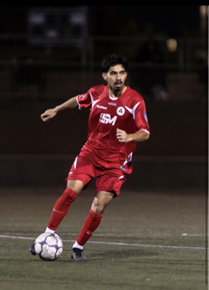
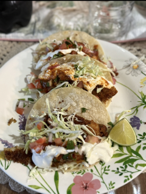
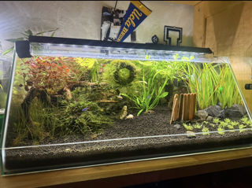
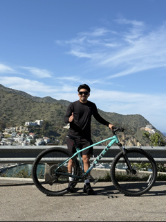

My name is Angel.
I am a Sociology major at UCLA. With a strong foundation in programming languages like Python, Java, C++, and web-development, my interests are in Human-Computer Interaction. I wish to explore how human cognition can be integrated with computers to enhance interaction, intelligence, and usability.
Who am I?
My name is Angel Anthony Valencia. I was born in the city of Los Angeles but raised in Long Beach. I am a first-generation Mexican-American Sociology major at the University of California, Los Angeles (UCLA). My goals in life are to lead the future “Valencia” generations into institutions that were once inaccessible to us.
My story at UCLA reflects what many first-generation students experience — trials and errors, limited guidance, imposter syndrome, and the pressure of carrying not only personal dreams, but family expectations. Navigating higher education without a blueprint forced me to learn resilience, independence, and self-advocacy.
Throughout my academic journey, I have learned many lessons, but the most significant has been understanding that struggle is not a sign of inadequacy — it is often evidence of growth. Being first-generation means breaking cycles, challenging doubt, and redefining what is possible. Every setback became preparation, and every obstacle strengthened my commitment to succeed — not just for myself, but for those who will come after me.

🏆 Futbol ⚽️ |

🌮 Food 🌯 |

🐠 Fishy 🐡 |

🚴🏼 Exercise 💪🏽 |